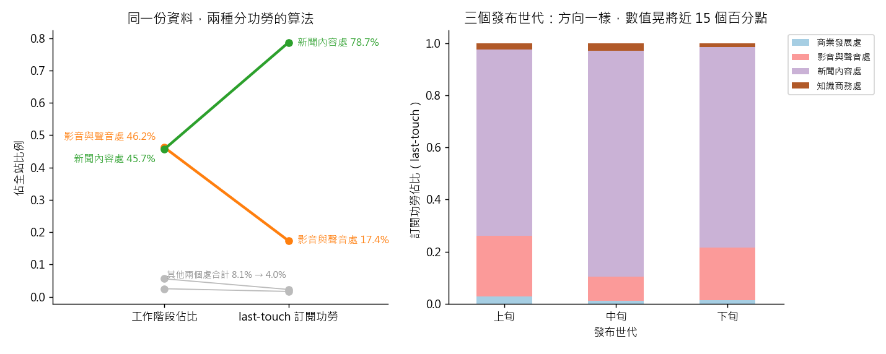

練習 07 - 訂閱功勞該算誰的
在本單元中，會介紹第 7 題「影音處貢獻一半流量卻只拿兩成訂閱功勞，年終獎金該怎麼分」從頭到尾實際跑一次的方法、跑出來的數字，以及畫出來的圖。
這一頁是做完之後對答案用的。還沒動手的話，先回 Hub - 資料分析練習案例庫 找到這一題，照「怎麼做」那一欄自己跑一次再回來。
題目
有人會這樣問你：年度檢討會上，影音與聲音處主管說：「我們做了全站快一半的流量，訂閱的功勞卻都算在新聞內容處頭上。」這句話對嗎？這筆訂閱到底該算誰的？
| 難度 | 挑戰 |
| 組別 | 第 2 組：把經營問題拆成算得出來的東西 |
| 用哪張表 | content_monthly_flat（L1：content_monthly_2024_10.csv）、content（L2：content.csv）、content_monthly（L2：content_monthly.csv）、dim_section（L2：dim_section.csv）、staff（L2：staff.csv） |
| 對應單元 | 歸因 這筆訂閱該算誰的（穩健性檢查接 世代分析 為什麼要看同一批人） |
方法
第一步先讀懂 conversion_cnt 的定義——「從這則內容進來而完成訂閱的人數」，它已經替你做了一個歸因選擇：功勞全給撞牆的最後那一則（last-touch）。第二步做一套對照歸因：把全站 14,463 個訂閱按各事業處的工作階段比例重新分配（流量加權，當作 first-touch 的粗略代理），比較兩套下的部門排名。第三步做穩健性檢查：只留 10 月上旬發布的內容重跑一次，看結論會不會變——不同時間發的稿混在一起算，差異可能只是反映那幾天發了什麼稿，這正是世代分析要擋的東西。最後寫清楚要有什麼資料才真的解得了這題（讀者層級的接觸路徑），以及在沒有它之前這個結論的效力到哪裡。用 R，因為最後要用一張斜線圖把「流量比例」和「訂閱功勞比例」兩端連起來，一眼看出誰掉下去，ggplot2 畫這種圖最短。
程式
這一題的分析用 R 跑，整支程式如下。R 的程式要從 kmg_data_universe 這個資料夾執行，資料放在 dist/L1 與 dist/L2。
# ex07 年終獎金該怎麼分：last-touch 與流量加權歸因（R）
# 檢查項目名稱刻意用英文：Windows 上 Rscript 讀原始碼的中文會亂碼，比對中文字串會靜默失敗。
suppressMessages(library(ggplot2))
res_dir <- "teacher/exercise_runs/results"
dir.create(res_dir, showWarnings = FALSE, recursive = TRUE)
out <- data.frame(name = character(), expected = character(), actual = character(), ok = logical(),
stringsAsFactors = FALSE)
chk <- function(name, expected, actual, tol) {
a <- as.numeric(actual)
out[nrow(out) + 1, ] <<- list(name, as.character(expected), as.character(round(a, 4)),
isTRUE(abs(a - as.numeric(expected)) <= tol))
}
flag <- function(name, ok, detail) {
out[nrow(out) + 1, ] <<- list(name, "", detail, isTRUE(ok))
}
f <- read.csv("dist/L1/content_monthly_2024_10.csv", fileEncoding = "UTF-8-BOM", stringsAsFactors = FALSE)
f <- f[order(f$ingest_ts), ]
f <- f[!duplicated(f[, c("content_id", "stat_month")], fromLast = TRUE), ]
divs <- unique(f$division)
news <- divs[grepl(intToUtf8(c(26032, 32862)), divs)] # 新聞內容處
av <- divs[grepl(intToUtf8(c(24433, 38899)), divs)] # 影音與聲音處
S <- tapply(f$sessions, f$division, sum)
C <- tapply(f$conversion_cnt, f$division, sum)
ss <- S / sum(S)
cs <- C / sum(C)
chk("av_session_share", 0.462, ss[av], 0.002)
chk("av_lasttouch_credit", 0.174, cs[av], 0.002)
chk("news_session_share", 0.457, ss[news], 0.002)
chk("news_lasttouch_credit", 0.787, cs[news], 0.002)
chk("news_gap_pp", 33, (cs[news] - ss[news]) * 100, 0.6)
chk("traffic_weighted_av", 0.46, ss[av], 0.01)
chk("traffic_weighted_news", 0.46, ss[news], 0.01)
day <- as.integer(substr(f$publish_at, 9, 10))
coh <- ifelse(day <= 10, 1, ifelse(day <= 20, 2, 3))
exp_coh <- c(0.716, 0.866, 0.769)
coh_vals <- c()
for (k in 1:3) {
g <- f[coh == k, ]
cc <- tapply(g$conversion_cnt, g$division, sum)
v <- cc[news] / sum(cc)
coh_vals <- c(coh_vals, v)
chk(paste0("cohort", k, "_news_credit"), exp_coh[k], v, 0.002)
}
chk("cohort_spread_pp", 15, (max(coh_vals) - min(coh_vals)) * 100, 1)
d <- data.frame(division = rep(names(ss), 2),
side = factor(rep(c("traffic", "credit"), each = length(ss)), levels = c("traffic", "credit")),
share = c(as.numeric(ss), as.numeric(cs[names(ss)])))
p <- ggplot(d, aes(side, share, group = division)) + geom_line() + geom_point()
ggsave(file.path(res_dir, "ex07_slope.png"), p, width = 5, height = 4, dpi = 110)
flag("PITFALL", (cs[news] - ss[news]) > 0.3 && (ss[av] - cs[av]) > 0.2,
sprintf("news credit %.3f vs traffic %.3f; av credit %.3f vs traffic %.3f", cs[news], ss[news], cs[av], ss[av]))
early <- f[day <= 10, ]
es <- tapply(early$sessions, early$division, sum)
ec <- tapply(early$conversion_cnt, early$division, sum)
flag("SELFCHECK", (es[av] / sum(es)) > (ec[av] / sum(ec)),
sprintf("Oct 1-10 only: av traffic %.3f vs credit %.3f", es[av] / sum(es), ec[av] / sum(ec)))
write.table(out, file.path(res_dir, "ex07.tsv"), sep = "\t", row.names = FALSE, fileEncoding = "UTF-8")
print(out)
out 那張表是對照檢查：每一列把入口頁寫的數字跟實際算出來的放在一起比，PITFALL 與 SELFCHECK 兩列記錄坑有沒有出現、自己驗那一步有沒有效。
畫圖的程式
圖用 Python 畫，因為 Windows 上 R 的中文字型不好設定。這支程式照同一套定義重算一次，順便確認跟 R 算出來的一樣。
"""第 7 題的圖（R 那支負責數字，這支用同一套算法重算一次再畫中文圖）。"""
from _kmg import *
r = R(7, "影音處貢獻一半流量卻只拿兩成訂閱功勞，年終獎金該怎麼分", suffix="_py")
f = dedupe(flat())
S = f.groupby("division")["sessions"].sum()
C = f.groupby("division")["conversion_cnt"].sum()
ss, cs = S / S.sum(), C / C.sum()
news = [d for d in ss.index if "新聞" in d][0]
av = [d for d in ss.index if "影音" in d][0]
r.chk("Python 重算 影音與聲音處 工作階段佔比", 0.462, float(ss[av]), tol=0.002)
r.chk("Python 重算 影音與聲音處 last-touch 功勞", 0.174, float(cs[av]), tol=0.002)
r.chk("Python 重算 新聞內容處 last-touch 功勞", 0.787, float(cs[news]), tol=0.002)
day = f["publish_at"].dt.day
coh = pd.cut(day, [0, 10, 20, 31], labels=["上旬", "中旬", "下旬"])
cc = f.groupby([coh, "division"], observed=True)["conversion_cnt"].sum().unstack(fill_value=0)
cc = cc.div(cc.sum(axis=1), axis=0)
fig, ax = plt.subplots(1, 2, figsize=(11, 4.4))
COL = {news: "#2ca02c", av: "#ff7f0e"}
for d in ss.index:
ax[0].plot([0, 1], [ss[d], cs[d]], marker="o", lw=2.4 if d in COL else 1, color=COL.get(d, "#bbbbbb"))
for d, dy in ((news, -9), (av, 9)):
ax[0].annotate("%s %.1f%%" % (d, ss[d] * 100), (0, ss[d]), xytext=(-8, dy), textcoords="offset points",
ha="right", va="center", fontsize=9, color=COL[d])
ax[0].annotate("%s %.1f%%" % (d, cs[d] * 100), (1, cs[d]), xytext=(8, 0), textcoords="offset points",
va="center", fontsize=9, color=COL[d])
small = [d for d in ss.index if d not in COL]
ax[0].annotate("其他兩個處合計 %.1f%% → %.1f%%" % (ss[small].sum() * 100, cs[small].sum() * 100), (0.5, 0.06),
ha="center", fontsize=8, color="#888888")
ax[0].set_xticks([0, 1], ["工作階段佔比", "last-touch 訂閱功勞"])
ax[0].set_xlim(-0.9, 1.8)
ax[0].set_ylabel("佔全站比例")
ax[0].set_title("同一份資料，兩種分功勞的算法")
cc.plot(kind="bar", stacked=True, ax=ax[1], rot=0, colormap="Paired")
ax[1].set_ylabel("訂閱功勞佔比（last-touch）")
ax[1].set_xlabel("發布世代")
ax[1].set_title("三個發布世代：方向一樣，數值晃將近 15 個百分點")
ax[1].legend(fontsize=8, loc="upper left", bbox_to_anchor=(1.0, 1.0))
save_fig(fig, "ex07_attribution.png")
r.save()
程式開頭的 from _kmg import * 載入共用的讀檔、去重、換幣別與畫圖函式，內容在 練習 01 - 月會上的則數對不對 的「共用的讀檔函式」那一段。
結果
主管說的方向是對的，但幅度要講清楚：影音與聲音處佔全站工作階段 46.2%，在 last-touch 下只拿到 17.4% 的訂閱功勞；新聞內容處佔 45.7% 的工作階段卻拿到 78.7%。換成流量加權，兩個處都變成大約 46%——整整 33 個百分點的落差完全由歸因規則造成，不是誰做得比較好。上、中、下三個發布世代分開看，方向都一樣（新聞內容處 71.6%、86.6%、76.9%），但數值會晃將近 15 個百分點，所以你只能說「方向穩定」，不能說「就是 78.7%」。真正的答案是兩套都不對：免費影音永遠不會出現在撞牆的那一刻，last-touch 結構上就拿不到功勞；而流量加權假設每一段造訪對訂閱的貢獻都一樣，同樣是硬套上去的假設。
實際跑出來的數字
下表每一列都是程式實際算出來的值，14 項全部跟上面那段文字對得起來。
| 項目 | 實跑結果 |
|---|---|
| 影音與聲音處 工作階段佔比 | 0.4619 |
| 影音與聲音處 last-touch 訂閱功勞 | 0.1736 |
| 新聞內容處 工作階段佔比 | 0.4571 |
| 新聞內容處 last-touch 訂閱功勞 | 0.7868 |
| 新聞內容處 兩套歸因落差（百分點） | 32.9637 |
| 流量加權 影音與聲音處 | 0.4619 |
| 流量加權 新聞內容處 | 0.4571 |
| 上旬世代 新聞內容處功勞 | 0.716 |
| 中旬世代 新聞內容處功勞 | 0.8656 |
| 下旬世代 新聞內容處功勞 | 0.7692 |
| 三個世代的晃動幅度（百分點） | 14.9644 |
| Python 重算 影音與聲音處 工作階段佔比 | 0.4619 |
| Python 重算 影音與聲音處 last-touch 功勞 | 0.1736 |
| Python 重算 新聞內容處 last-touch 功勞 | 0.7868 |
圖表

左圖是兩種分功勞算法的對照：新聞內容處與影音與聲音處的工作階段幾乎一樣多，last-touch 功勞卻一個 78.7%、一個 17.4%。右圖把內容按發布日期分成上中下旬三個世代各算一次，方向一樣，數值會晃。
這題的坑，實際跑的時候有沒有出現
把 conversion_cnt 直接當成「這則內容造成的訂閱」。它是資料庫已經替你選好的 last-touch 歸因，不是因果；拿它排部門功勞，等於把獎金綁在「誰的稿被放到付費牆後面」這個編輯決定上，而不是誰真的說服了讀者。這裡同時也是分母混淆的另一種長相：功勞的分母是訂閱數、貢獻的分母是工作階段，兩邊不先換算就直接比，任何一個部門都能證明自己被虧待。
實際跑的結果：新聞內容處拿到 78.7% 的訂閱功勞，工作階段只佔 45.7%；影音與聲音處功勞 17.4%，工作階段卻佔 46.2%。
自己驗那一步抓不抓得到錯
只留 publish_at 在 10 月 1 日至 10 日的內容，把整套重跑一次；如果「影音處流量高、功勞低」這個方向不見了，代表你看到的是世代組成不是歸因規則。另外把 conversion_cnt 的欄位定義原句抄進報告，旁邊寫一句「這句話幫我做了什麼假設」。
實際跑的結果：只留 10 月 1 日至 10 日發布的內容，影音與聲音處的流量佔比 49.4%、功勞佔比 23.2%，方向沒有變。
接著做
上一題 練習 06 - banner 賣廣告還是推訂閱、下一題 練習 08 - 自助平台點擊率真的比較高嗎，或回到 Hub - 資料分析練習案例庫 挑別的題目。
學生版｜更新於 2026-09-13 10:38